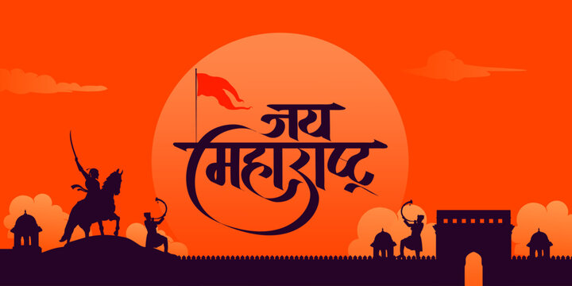

Maharastra
Maharashtra is a state in the western peninsular region of India occupying a substantial portion of the Deccan Plateau. It is bordered by the Arabian Sea to the west, the Indian states of Karnataka and Goa to the south, Telangana to the southeast and Chhattisgarh to the east, Gujarat and Madhya Pradesh to the north, and the Indian union territory of Dadra and Nagar Haveli and Daman and Diu to the northwest. Maharashtra is the second-most populous state in India.
The state is divided into 6 divisions and 36 districts, with the state capital being Mumbai, the most populous urban area in India, and Nagpur serving as the winter capital. The Godavari and Krishna are the two major rivers in the state and forests cover 16.47 per cent of the state's geographical area. The state is home to six UNESCO World Heritage Sites: Ajanta Caves, Ellora Caves, Elephanta Caves, Chhatrapati Shivaji Terminus (formerly Victoria Terminus), The Victorian Gothic and Art Deco Ensembles of Mumbai and The Western Ghats, a heritage site made up of 39 individual properties of which 4 are in Maharashtra. The State is the single largest contributor to India's economy with a share of 14 per cent in all-India nominal GDP. The economy of Maharashtra is the largest in India, with a gross state domestic product (GSDP) of ₹35.27 trillion (US$420 billion) and GSDP per capita of ₹242,247 (US$2,900).The service sector dominates the state's economy, accounting for 69.3 per cent of the value of the output of the country. Although agriculture accounts for 12 per cent of the state GDP, it employs nearly half the population of the state.
Maharashtra is one of the most industrialised states in India. The state's capital, Mumbai, is India's financial and commercial capital.India's largest stock exchange Bombay Stock Exchange, the oldest in Asia, is located in the city, as is National Stock Exchange, which is the second largest stock exchange in India and one of world's largest derivatives exchanges. The state has played a significant role in the country's social and political life and is widely considered a leader in terms of agricultural and industrial production, trade and transport, and education.Maharashtra is the ninth-highest ranking among Indian states in the human development index.